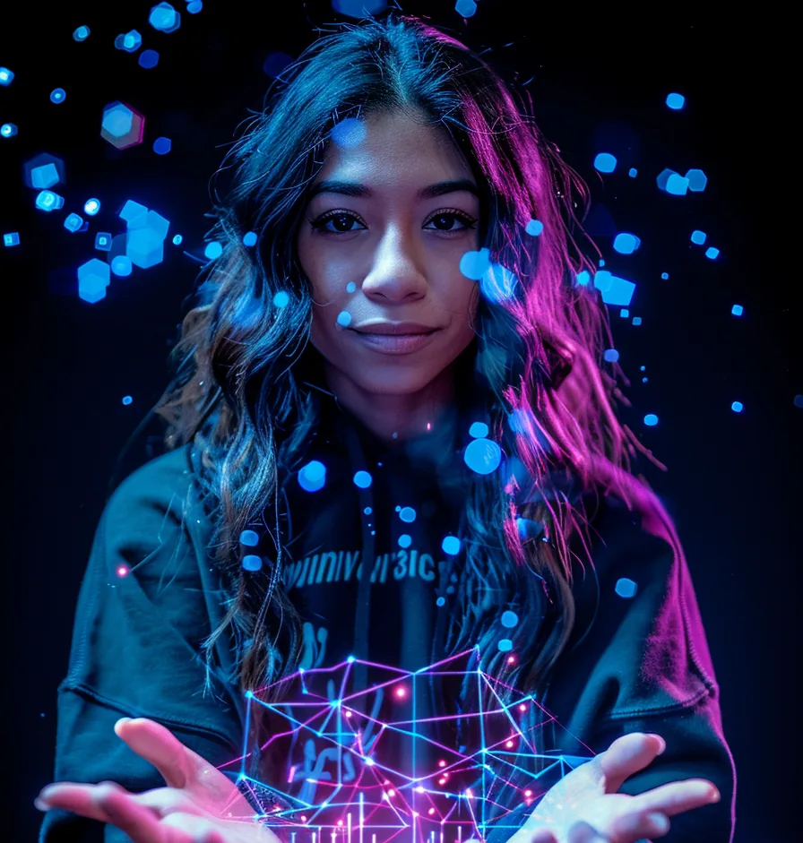

Software developers in Texas: median wage $127,000 a year (Texas Workforce Commission, via TEA; retrieved 2024).
Desarrolladores de software en Texas: mediana salarial de $127,000 al año (Texas Workforce Commission, vía TEA; consultado en 2024).

Welcome, families·Bienvenidas, familias
Computer Science at CHS·Ciencias de la Computación en CHS
At course selection next week, ask for Fundamentals of Computer Science.
Pidan Fundamentals of Computer Science al elegir sus materias.
Talk to Mr. Johnston and his students at the table
Hablen con el Sr. Johnston y sus estudiantes en la mesa
Never coded? Good. Start here.
¿Su hijo o hija nunca ha programado? Qué bueno. Aquí puede empezar.
This class is hard. That's the point.
Esta clase es difícil. Esa es la idea.
We hold you to a high standard because we know you can reach it.
Les exigimos mucho porque sabemos que sí pueden.
What do they learn?
¿Qué se aprende?
To give instructions, find mistakes and solve problems.
A dar instrucciones, encontrar errores y resolver problemas.
Fundamentals of Computer Science · 1 high school credit · No prerequisites
Fundamentals of Computer Science · 1 crédito de preparatoria · Sin requisitos previos
Program Karel, a robot dog, in JavaScript: commands, functions, loops, if/else
Programar a Karel, un perro robot, en JavaScript: comandos, funciones, loops (ciclos), if/else (si / si no)
Debug: find out why the code did exactly what you said, which wasn't what you meant
Debug (depurar): descubrir por qué el código hizo exactamente lo que le dijeron, y no lo que querían decir
Make their first web page in HTML
Crear su primera página web en HTML
Design a product from scratch and pitch it, like a real tech company
Diseñar un producto desde cero y presentar una propuesta, como se hace en una empresa de tecnología
Bell work to start every class: a short puzzle or prediction
Actividad de inicio en cada clase: un breve acertijo o predicción
The same thinking (breaking problems down, logic, finding and fixing mistakes) carries into:
La misma forma de pensar (dividir un problema en partes, la lógica, encontrar y corregir errores) se aplica en:
Engineering
Ingeniería
Medicine and health tech
Medicina y tecnología de la salud
Data science
Ciencia de datos
Cybersecurity
Ciberseguridad
Aerospace
Industria aeroespacial
Business
Negocios
Careers and pay in Texas·Empleos y salarios en Texas
Software developers in Texas: median wage $127,000 a year (Texas Workforce Commission, via TEA; retrieved 2024).
Desarrolladores de software en Texas: mediana salarial de $127,000 al año (Texas Workforce Commission, vía TEA; consultado en 2024).
This is the median for all software developers in Texas, not a starting salary.
Es la mediana de todos los desarrolladores de software en Texas, no un sueldo de entrada.
Software developers: 12,350 openings a year and 36% ten-year growth.
Desarrolladores de software: 12,350 vacantes de empleo al año y 36% de crecimiento en diez años.
Computer programmers: median wage $99,177.
Programadores de computadoras: mediana salarial de $99,177.
Computer user support specialists: median wage $51,823, 21% growth.
Especialistas en soporte técnico de computadoras: mediana salarial de $51,823 y 21% de crecimiento.
Source for all three: Texas Workforce Commission, via TEA; retrieved 2024. Medians, not starting salaries.
Fuente de los tres: Texas Workforce Commission, vía TEA; consultado en 2024. Son medianas, no sueldos de entrada.
Fundamentals of Computer Science (CHS or Alderete MS)or Principles of Information Technology (Canutillo MS)
Fundamentos de Ciencias de la Computación (CHS o Alderete MS)o Principios de Tecnología de la Información (Canutillo MS)
Computer Science Ior AP Computer Science Principles
Ciencias de la Computación Io AP Principios de Ciencias de la Computación
Game Programming and Design
Programación y Diseño de Videojuegos
AP Computer Science Aor Computer Science II
AP Ciencias de la Computación Ao Ciencias de la Computación II
Already took one of these in middle school? Ask Mr. Johnston about your next step.
¿Su hijo o hija ya llevó alguna de estas materias? Pregúntenle al Sr. Johnston qué sigue.
Passing an AP exam can earn college credit at many colleges.
Aprobar un examen AP puede dar créditos universitarios en muchas universidades.
Completing this program of study, once all its courses are offered, can fulfill one of these:
Completar este programa de estudios, cuando se ofrezcan todos sus cursos, puede cumplir uno de estos:
STEM
Science, technology, engineering and math, when the math and science requirements are met
Ciencias, tecnología, ingeniería y matemáticas, cuando se cumplen los requisitos de matemáticas y ciencias
or
o
Business and Industry
Negocios e Industria
Each course in the planned pathway is on the state's Programming and Software Development program of study.
Cada curso de la ruta planeada forma parte del programa de estudios estatal de Programación y Desarrollo de Software.
U.S. Air Force veteran
Veterano de la Fuerza Aérea de EE. UU.
MBA · 12th year teaching
MBA · 12.º año como maestro
Coached VEX Robotics teams to the World Championship (2022)
Entrenó a equipos de VEX Robotics que llegaron al Campeonato Mundial (2022)
Former district Director of Robotics
Exdirector de Robótica del distrito
Founder of West Robotics, a 501(c)(3) nonprofit
Fundador de West Robotics, una organización sin fines de lucro 501(c)(3)
He designs, codes and runs his own web software for schools: the same skills this pathway starts teaching.
Diseña, programa y administra su propio software web para escuelas: son las mismas habilidades que este programa empieza a enseñar.
Pioneers·Pioneros
Ellen Ochoa
Engineer and inventor. The first Hispanic woman in space (1993), later director of NASA's Johnson Space Center.
Ingeniera e inventora. La primera mujer hispana en el espacio (1993) y, después, directora del Centro Espacial Johnson de la NASA.
Ada Lovelace
Published the first algorithm meant for a machine, in 1843.
Publicó el primer algoritmo pensado para una máquina, en 1843.
Luis von Ahn
Born in Guatemala. Co-invented CAPTCHA and reCAPTCHA and co-founded Duolingo.
Nació en Guatemala. Coinventor de CAPTCHA y reCAPTCHA, y cofundador de Duolingo.
Girls Who Code
TSA programming challenges
Retos de programación de TSA
Technology Student Association·Asociación de Estudiantes de Tecnología

At course selection next week, ask for Fundamentals of Computer Science.
Pidan Fundamentals of Computer Science al elegir sus materias.
Interested? Scan so Mr. Johnston knows.
¿Les interesa? Escaneen para avisarle al Sr. Johnston.
This isn't registration: ask for Fundamentals of Computer Science at course selection.
No es la inscripción: pidan Fundamentals of Computer Science al elegir sus materias.